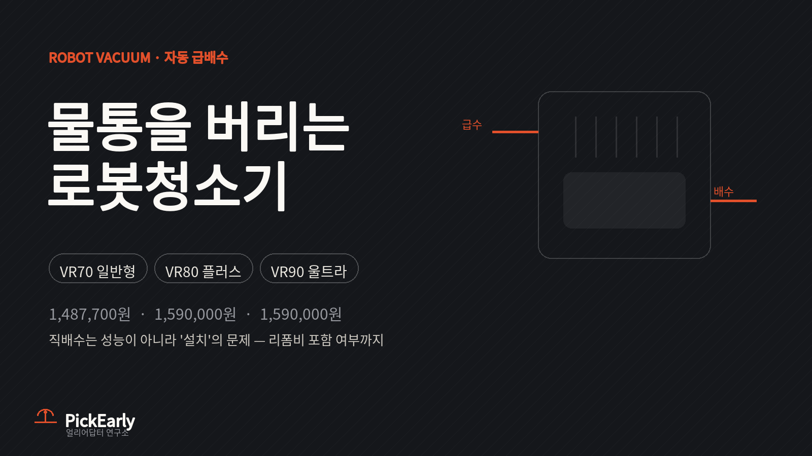

삼성 비스포크 AI 스팀 자동 급배수, 물통 안 버려도 되는 로봇청소기의 조건
직배수는 성능이 아니라 '설치'의 문제입니다. 리폼비 포함 여부, 스테이션 구조, 모델명 끝자리 — 돈을 쓰기 전에 확인할 세 가지를 정리했습니다.
Issue 01 · 2026.11.25
쿠팡과 알리에서 진짜 쓸 만한 것만 골라, 사기 전에 알아야 할 것부터 정리합니다. 스펙 나열이 아니라 돈을 쓰기 전에 걸리는 지점을 씁니다.
2026.11.25 발행
직배수는 성능이 아니라 '설치'의 문제입니다. 리폼비 포함 여부, 스테이션 구조, 모델명 끝자리 — 돈을 쓰기 전에 확인할 세 가지를 정리했습니다.
기사 읽기 →
카테고리를 고르거나 검색해 보세요
직배수는 성능이 아니라 '설치'의 문제입니다. 리폼비 포함 여부, 스테이션 구조, 모델명 끝자리 — 돈을 쓰기 전에 확인할 세 가지를 정리했습니다.

스마트폰 녹음은 통화가 오면 끊기고, 한 시간짜리 파일은 다시 듣기 어렵습니다. BOYA Notra Neo와 NEWYES Ailog를 같은 조건에서 비교했습니다.
가격과 재고는 확인한 날짜를 붙여 적고, 바뀌면 글도 고칩니다.
후기에서 반복되는 단점과 설치·구독 조건을 결론보다 앞에 둡니다.
수수료를 받는 글은 본문 첫머리에 고지하고, 결론은 수수료와 무관하게 씁니다.